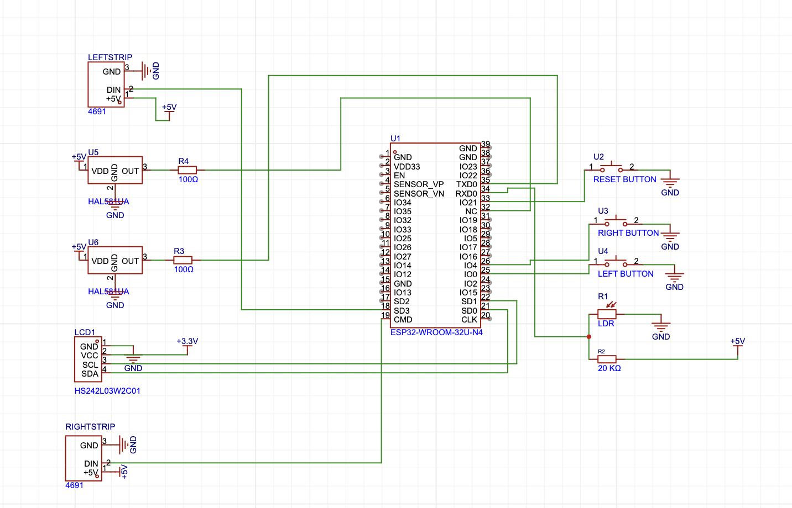
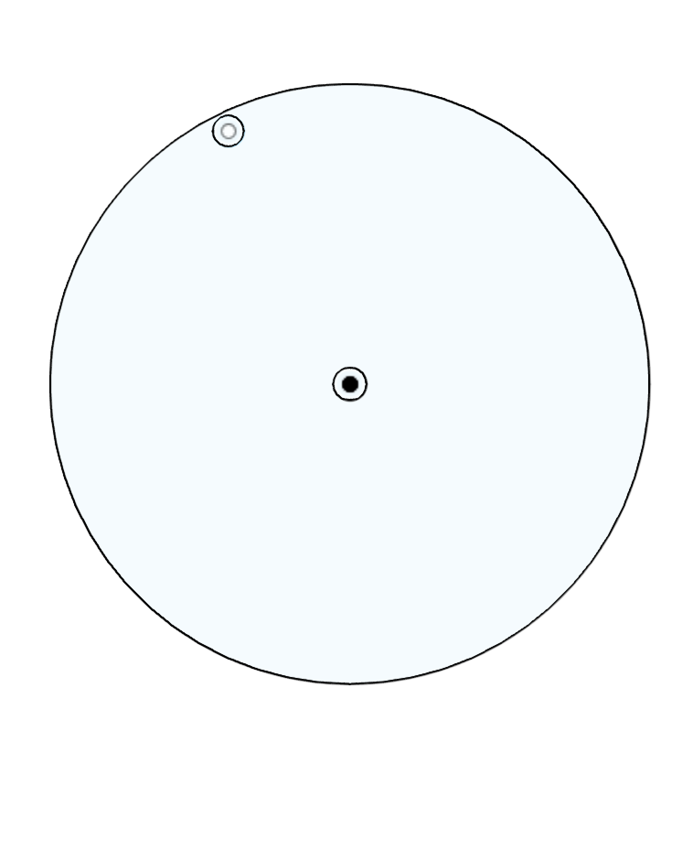
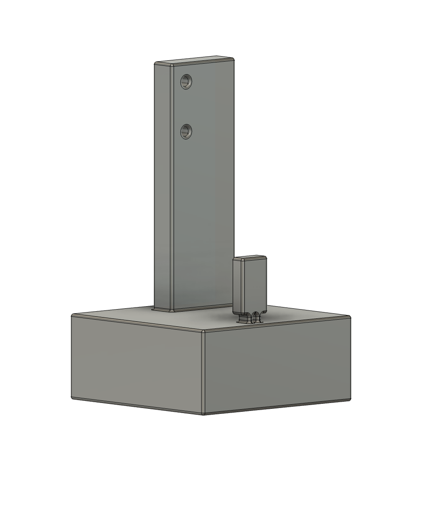

<div class="textcontainer">
<p class="margin"></p>
<h3 class="title">Final Project: Smart Cycling Companion!</h3>
<br>
<h4 class="title">Project Introduction</h4>
<p>
The Smart Cycling Companion is a custom-built, technology-enhanced system designed to improve safety, convenience,
and usability for cyclists. The system integrates turn signals, speed monitoring, and automatic lighting adjustments,
all controlled by an ESP32 microcontroller. <br>
I chose this project one, because of a personal passion for cycling and two because it will give me the opportunity
to apply to a practical real-world problem my Electrical Engineering skills, while gaining design skills.
</p>
<h4 class="title">Project Video</h4>
<p>
If you prefer watching a video to reading, you can check out the video below. It gives a brief overview of the project and its features. <br>
</p>
<div style="text-align: center; max-width: 1000px; margin: 0 auto;">
<iframe width="100%" height="562"
src="https://www.youtube.com/embed/MXp-lmJnmMQ"
title="Project Video"
frameborder="0"
allow="accelerometer; autoplay; clipboard-write; encrypted-media; gyroscope; picture-in-picture"
allowfullscreen>
</iframe>
<p style="margin-top: 8px; font-size: 14px; color: #c9c9c9;">Video of the project</p>
</div>
<h4 class="title">How It Works</h4>
<p>
1. Turn Signals with Auto-Off Feature: Handlebar-mounted buttons allow the cyclist to signal turns. A motion and tilt
sensor (MPU6050) detects when a turn is completed and automatically turns off the signal. <br>
2. Speed Monitoring & Display: A Hall effect sensor measures wheel rotation to calculate speed. The speed is displayed
on a water-resistant LED screen mounted on the handlebars. <br>
3. Cycling Stats: The system tracks distance, and maximum speed achieved during a single ride, providing real-time feedback to the cyclist. <br>
4. Automatic Light Adjustment: A light sensor (LDR) detects ambient lighting conditions. LED brightness automatically
adjusts for better visibility in low-light conditions. <br>
5. Power & Durability: Powered by a 5V USB power bank, ensuring easy recharging. The system is housed in a 3D-printed
waterproof enclosure, designed to withstand outdoor cycling conditions.
</p>
<h4 class="title">Why This Project Matters</h4>
<p>
- Enhanced Safety: Clear turn signals improve visibility for other road users. <br>
- Hands-Free Automation: Auto turn-off signals reduce the need for manual operation. <br>
- Real-Time Feedback: Speed tracking allows cyclists to monitor their performance. <br>
- It's fun way to gain engineering and design skills!
</p>
<h4 class="title">Project Model</h4>
<p>
I am yet to create a 3D model as I couldn't figure out
which software was best for illustration. I am used to LTspice but
it does not have most sensors, actuators or the ESP32 microntroller. To improvise, see below a schematic I made in easyeda of the electrical components.
</p>
<div class="d-flex justify-content-center">

</div>
<br>
<h4 class="title">Bill of Materials (BOM)</h4>
<p>
Most components I used I got from PS70 lab but you can get all/most of these items from amazon or equivalent sites. The prices are thus approxiamte and may vary depending on the supplier.
</p>
<div class="container mt-3">
<table class="table table-bordered" style="color: white;">
<thead style="background-color: #dc143c; color: white;">
<tr>
<th>Component</th>
<th>Quantity</th>
<th>Approximate Cost</th>
</tr>
</thead>
<tbody>
<tr style="background-color: #333333; color: white;">
<td>ESP32 Dev Board</td>
<td>1</td>
<td>$10</td>
</tr>
<tr style="background-color: #444444; color: white;">
<td>Custom PCB</td>
<td>1</td>
<td>$10</td>
</tr>
<tr style="background-color: #333333; color: white;">
<td>Hall Effect Sensor (A3144)</td>
<td>2</td>
<td>$2</td>
</tr>
<tr style="background-color: #444444; color: white;">
<td>MPU6050 (Accelerometer + Gyroscope)</td>
<td>1</td>
<td>$5</td>
</tr>
<tr style="background-color: #333333; color: white;">
<td>Light Sensor (LDR)</td>
<td>1</td>
<td>$1</td>
</tr>
<tr style="background-color: #444444; color: white;">
<td>Push Buttons (Waterproof)</td>
<td>3</td>
<td>$5</td>
</tr>
<tr style="background-color: #333333; color: white;">
<td>OLED Display</td>
<td>1</td>
<td>$5</td>
</tr>
<tr style="background-color: #444444; color: white;">
<td>LED Strips/Neopixels (5V)</td>
<td>2</td>
<td>$10</td>
</tr>
<tr style="background-color: #444444; color: white;">
<td>5V USB Power Bank</td>
<td>1</td>
<td>$20</td>
</tr>
<tr style="background-color: #333333; color: white;">
<td>USB Cable</td>
<td>1</td>
<td>$5</td>
</tr>
<tr style="background-color: #444444; color: white;">
<td>3D Printed Enclosure</td>
<td>1</td>
<td>$10</td>
</tr>
<tr style="background-color: #333333; color: white;">
<td>Miscellaneous (Resistors, PCB Headers, Wires, Heat Shrink, etc.)</td>
<td>Various</td>
<td>$10</td>
</tr>
</tbody>
<tfoot style="background-color: #555555; color: white;">
<tr>
<th>Total Estimated Cost</th>
<td colspan="2">$100 - $150</td>
</tr>
</tfoot>
</table>
</div>
<h4 class="title">Project Timeline</h4>
<p>
This is a rough timeline of what I plan to do for the project. I will update this page as I progress. My class
assignments going forward may revolve around this project and its obejctives.
</p>
<P>
This Week: I will begin by 3D modeling and printing the enclosure that will house the
ESP32 microcontroller and the power source.
</P>
<P>Week 6: Test the sensors I am planning to use to get familiar. Particularly
Hall effect and LDR sensors. <br>
</P>
<p>
Week 7: Test the actuators and the buttons. I will try to take input
from the microcontroller and display it on the screen and also use input
from sensos in week 6 to make Leds on or off <br>
</p>
<p>
Week 8: Start working on the PCB design and the code for the project. <br>
</p>
<p>
Week 9 onwards: Put it all together and start testing. I may also
develop custom parts to attach to bike <br>
</p>
<h4 class="title">Integrated Project</h4>
<p>
For this assignment (week 13), I developed my lighting system, and tested the sensors I would use.<br><br>
For the lighting system, I used neopixels (for how easily programmable they are), a photoresistor and buttons. I had to get a strip of neopixels from lab and solder wires to the different pins. At first, I did this wrongly as I didn't know data flows unidirectionlly on the strip, I thus spent a lot of time debugging with no real progress till Bobby (one of the TAs) pointed it out and I had to solder a different one. After this was done, I wired the data pin to pins 18 and 19 on the ESP 32, the VCC pin to 3.3V bus and the GND pins to common ground. I still used pull up resistors on the data pins to avoid any issues even though I wouldn't be sending data at high speeds.<br><br>
I also had the following: two buttons, one for the left turn signal and one for the right turn signal wired to pins 25 and 26; a photoresistor and a 20k resistor in parallel and connected to 5v going to pin 34 and an OLED screen with I2C communication (SCL, SDA). For the photoresistor system, the bigger resistor allowed me to have a wider range of values while minimizing the current drawn.<br><br>
I then programmed the neopixels to have the following functionality: <br>
- When a button is pressed, the corresponding neopixels would turn on and blink in red and depending on the side, either
"Left Blinker on" or "Right Blinker on" would be displayed on the screen. <br>
-When both buttons were pressed at the same time, both strips will blink, this time faster, and the "safety lights on" would be displayed on the screen. <br>
-The photoresistor would regulate the brightness of the neopixels depending on the ambient light.<br>
</p>
<p>You can <a href="JustLights.ino" target="_blank" style="color: #dc143c;">Download the Arduino Code</a> I used to do this here!</p>
<div style="text-align: center; max-width: 1000px; margin: 0 auto;">
<video width="100%" height="auto" controls>
<source src="JustSpeed.mp4" type="video/mp4">
Your browser does not support the video tag.
</video>
<p style="margin-top: 8px; font-size: 14px; color: #c9c9c9;">Video of the lighting system in action</p>
</div>
<p>During this time, I also tested my MPU 6050 sensor as this was essential to making the turn signals "smart". But I run into problems with this sensor even after immense helo from Bobby. The ESP 32 could only read data from the MPU via I2C commiication when it was the only device connected. If both the screen and MPU were connected, it was not found. Switching microcontrollers made it worked for a while and then it stopped during the last few days and I gave up on the idea. In case, even if it worked, it would still not have been enough to continously calibrate angular changes. How I planned to do that with the MPU was by integrating the angular velocity over time to yield the integrated angle but this would only worls when you know both your starting and ending positions and the MPU would have had to be reset every time a turn was anticipated which is not very convinient. Some of the online sources I read suggested using an Inertial Measurement Unit (IMU) that includes a magnetometer to get the absolute position but I didn't have time to test this. I will try to implement the idea in the future.</p>
<h4 class="title">Later weeks and final Product</h4>
<p>
During reading and final period, I worked on speed sensing and ride stats. For debugging and demonstration purposes, I made a model of my bike system instead of having to do all the testing on my actual bike. I designed a very simple wheel in Fusion 360 with space for the DC motor and another space 58 cm from the edge for the magnet and cut it using the laser cutter. I also designed a simple holder for the DC motor and the hall effect sensors I used and 3d printed them, one for each wheel. See the designs below. <br><br>
<div style="display: flex; justify-content: center; gap: 20px; max-width: 100%;">
<div style="text-align: center; max-width: 336px;">

<p style="margin-top: 8px; font-size: 14px; color: #c9c9c9;">Wheel Design</p>
</div>
<div style="text-align: center; max-width: 350px;">

<p style="margin-top: 8px; font-size: 14px; color: #c9c9c9;">Motor and Hall Effect Holder</p>
</div>
</div>
</p>
<p>
I connected DC motors and the wheel on the holder and connected the motors to an external power supply (I wouldn't need power for my bicycle wheels hence the need to seperate this system). Then I soldered long wires to each of the three pins of the hall efect sensor and attached them to pins 32 and 35 of the ESP 32, using pull up resistors for their Data pins. For each instance a magnet was detected, the ESP 32 would count it as a rotation and I would use the time between two rotations to calculate the speed. Every time a magnet was detected, I would add it to a count for the total distance travelled. I then displayed the average speed in m/s, the max distance "D" in km and the max speed achieved during that ride on the OLED screen. Depending on whether the wheel was moving or not, I also displayed ride status as Riding or Stopped. Additionally, I added a button on pin 33 to RESET ride stats when the ride was complete<br><br>
You can download the code I used to do this <a href="JustSpeed.ino" target="_blank" style="color: #dc143c;">here!</a> <br><br>
And here is a video of the speed sensing system in action.<br>
<div style="text-align: center; max-width: 1000px; margin: 0 auto;">
<video width="100%" height="auto" controls>
<source src="JustSpeed.mp4" type="video/mp4">
Your browser does not support the video tag.
</video>
<p style="margin-top: 8px; font-size: 14px; color: #c9c9c9;">Video of the speed sensing system in action</p>
</div>
</p>
<p>
I then integrated the two systems by connecting the neopixels to the same power supply (portable battery) as the sensors and using the same ground. I also connected the buttons to the same pins as before. I then "merged" the code for both systems with a few tweaks on the display. These took much more time that I expected. <br><br>
You can download the final integrated code <a href="FullFinalProjectCode.ino" target="_blank" style="color: #dc143c;">here!</a> <br><br>
And here is a video of the final product in action.<br>
<div style="text-align: center; max-width: 1000px; margin: 0 auto;">
<video width="100%" height="auto" controls>
<source src="FinalProject.mp4" type="video/mp4">
Your browser does not support the video tag.
</video>
<p style="margin-top: 8px; font-size: 14px; color: #c9c9c9;">Video of the final product in action</p>
</div>
<h4 class="title">Conclusion and Next Steps</h4>
<p>
Overall, I am very happy with the final product. I learnt a lot about the different sensors and actuators I used and how to integrate them. I also learnt a lot about the ESP 32 and how to use it to control multiple devices at once. I am looking forward to using this system on my bike by modelling sensor holders and screen protectors and 3D printing them. I also hope to make the sytem itself even better in the future. <br>
If you have any questions or suggestions, please feel free to reach out to me. I would love to hear your feedback and ideas for improvement. <br>
</p>
<h4 class="title">Acknowledgements</h4>
<p>
I would like to thank the course staff (especially Nathan, Bobby, and Kassia), my classmates, and the guest reviewers during the MVP for their support and feedback throughout this project. I really appreciate all the help and guidance I received. If you are reading this and cosidering taking PS70, definitely take it, you for sure will not regret it!<br>
</p>